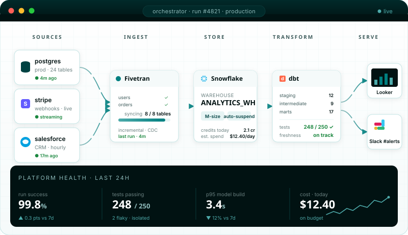

Analytics you can trust
Composable data stacks with dbt, CI/CD, and lineage. Never doubt a dashboard number again.
See analytics engineering →Yuna Labs designs and ships analytics platforms with the rigor of modern engineering, versioned, tested, observable, and ready for the decisions your teams need to make.

Models, pipelines, dashboards, and infrastructure live under version control with reviewable history.
Schema, freshness, and logic tests run on every change. Breakage is caught before stakeholders see it.
Data lineage, freshness, cost, and quality are first-class, not instrumented after the fact.
Modern, vendor-neutral stacks. You keep your data, your cloud, and your options.
Composable data stacks with dbt, CI/CD, and lineage. Never doubt a dashboard number again.
See analytics engineering →Secure, cost-aware architectures on AWS, Azure, and GCP. Infrastructure that grows with demand.
Explore platform work →Fast dashboards and semantic layers that make the right metric obvious across the organization.
Learn about product work →Every tile is wired to a tested model, with lineage from raw source to chart. No more “why is this number different from the one in the deck?” Every metric has an owner, a definition, and a freshness SLA.

Our position
We don’t ship dashboards. We ship platforms: versioned, tested, observable. Platforms your team can run long after we leave.
The working principle behind every Yuna Labs engagement.
Anonymized at the client’s request. We’re happy to walk through specifics under NDA.
Finance owned a 14-tab spreadsheet that nobody fully trusted. We replaced it with a modeled revenue mart, four tested dashboards, and a Slack alerts channel for freshness misses.
Consolidated three legacy clusters into one Snowflake warehouse with dbt models, IAM-scoped schemas, and a HIPAA-aligned audit trail. Migration shipped in tested increments with zero unplanned downtime.
A short audit surfaced a runaway scheduled query consuming 60% of warehouse credits. We delivered a written assessment, a 30-day remediation plan, and a costed roadmap for a longer rebuild.
Three phases, each with a concrete deliverable. No open-ended engagements.
We assess your current stack, data contracts, and reporting surface. You get a written assessment with prioritized recommendations within two weeks.
We map target architecture, data contracts, and delivery milestones. You sign off on scope and cost before a line of code is written.
We ship in small, tested increments with CI/CD and observability on from day one. You own the code and the documentation.